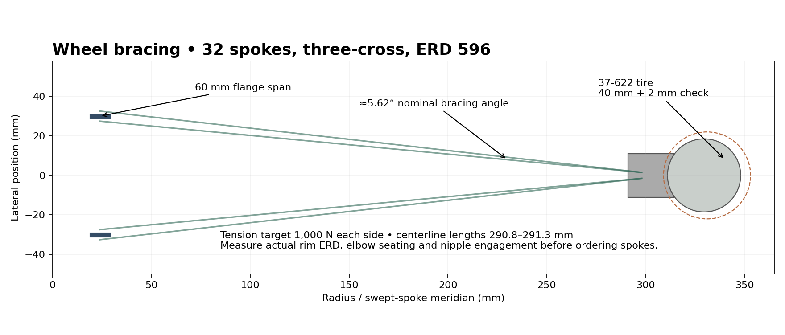
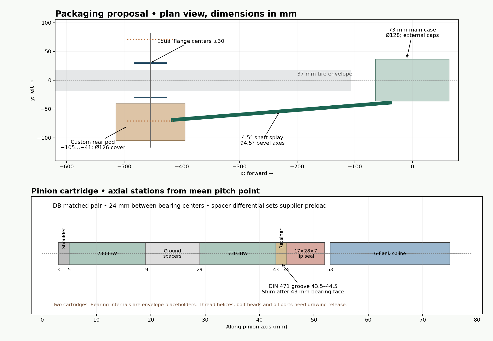

Design revision · fixed gear · engineering proposal
A realistic wheel, with an angled shaft.
The revised model uses a 37-622 touring tire, a symmetric 32-spoke wheel and a shaft that splays 4.5° outward. Its bevel axes meet at 94.5°. The 73 mm main gearbox case uses external bearing caps. Positive spline and dog connections carry torque in both directions.
This is a buildable-layout investigation, not a released bicycle design. Clearance and preliminary load checks are provided below. Hub bearing capacity, bevel fatigue/contact, service-cover attachments, crank retention and frame structure remain release gates. The rear interface is custom: the ±71 mm frame datums do not make this a standard 142 mm hub. The modeled axle assembly extends from −116 to +81 mm, and the rear cover to −105 mm.
1. Wheel and frame packaging
Reference tire: Schwalbe Marathon Mondial 37-622, marketed as 700×35C. Reference rim: DT Swiss R460, 622 BSD, 596 mm ERD, 22 mm outside width, 23 mm height, 32 holes. The source wheel/rim model is an envelope with straight spoke centerlines, nipples and alternating J-bend endpoints; it does not reproduce the proprietary rim extrusion or spoke weaving.
| Parameter | Original | Revision |
|---|
| Flange centers | −12.5 / +34.5 mm | −30 / +30 mm |
| Flange span | 47 mm | 60 mm |
| Approx. high/low spoke tension ratio | 2.76 | 1.00 |
| Chainstay length | 430 mm | 460 mm |
| Shaft splay | 2° | 4.5° |
| Main case width | 100 mm | 73 mm; 93 mm across bearing-cap bosses |
| Crank outside faces | Original arrangement | ±88 mm, nominal Q 176 mm |
The crank spacing increases to Q 176 mm to clear the larger pinion cartridge through a full pedal revolution; the initial Q 158 mm package did not provide this clearance. The non-drive chainstay attachment moves outward and the seatstays spread at the seat cluster. The drive-side seatstay terminates on the rear pod carrier instead of entering its oil cavity. This is a custom frame, not a retrofit to a Surly Cross-Check. The Cross-Check reference defines the touring tire use case.

Nominal spoke centerline length is 291.06 mm; alternating endpoints give 290.83–291.32 mm. Use these for the model, not a spoke order: measure actual ERD, nipple seating and J-bend geometry first. Start wheel-building at 1,000 N on both sides, subject to the selected rim/spoke manufacturer's limits. The simplified torsional wheel model gives ±82.6 N per spoke at 60 N·m hub torque and ±165.2 N at proof torque. Vertical load redistribution, spoke crossings and lateral wheel compliance still require a wheel test/model.
Clearance results
| Envelope, full rotation | Conservative lower gap | Target |
|---|
| Nominal 37 mm tire | 13.41 mm | 6 mm |
| 40 mm tire | 11.80 mm | 6 mm |
| 40 mm + 2 mm movement in any direction | 9.80 mm | 4 mm |
| Swept spokes, all wheel angles | 7.28 mm | 5 mm nominal |
The original frame gave essentially zero margin around the 37 mm tire and approximately 1.61 mm interference with a 40 mm tire. Its rotating-spoke envelope had about 1.03 mm nominal clearance. The revised gaps above are minimum distances to the assembled frame, gearbox housings and covers, including all wheel rotation angles.
clearance.py minimizes analytic tire and swept-spoke distance functions across every frame STL triangle using a Lipschitz branch-and-bound calculation. Bounds include 0.08 mm refinement tolerance, 0.03 mm mesh allowance and the explicitly calculated spoke-meridian approximation error. The frame exporter reports less than 0.010 mm sag. The 2 mm expanded tire envelope conservatively bounds lateral displacement and radial growth; subtract 2 mm from the spoke lower bound for an analogous movement budget. Nipples sit within the checked rim envelope. These are rigid-geometry margins, not a prediction of frame or wheel flex. Pedals, shoes and fenders are not modeled; check their envelopes on the complete bicycle.

Layout drawing PDF · Wheel section PDF
2. Gear geometry and physics corrections
The previous cone construction used right-angle pitch-cone proportions even when the shaft angle changed. The new zero-offset generator uses δp = atan2(sin Σ, i + cos Σ), δg = Σ − δp, and R = rg/sin δg. For 18/54 teeth and Σ = 94.5°, δp = 18.841° and δg = 75.659°; rp = 13.5 mm and rg = 40.5 mm. The crown proportions and the pinion-angle constraint are corrected in spiral_bevel/angled_bevel.sv.
The 30/15/60 planetary remains a 3× step-up; the 54/18 front bevel adds 3×, so the shaft runs at 9× crank speed. The rear bevel reduces 3×: wheel speed remains 3× crank speed, equivalent to 48×16 fixed gear. Planetary normal module is now 1.25 mm and face width 23 mm; bevel mean module is 1.5 mm, nominal face width 12.54 mm and spiral angle 25°. Prototype normal backlash allowances are 0.10 mm planetary and 0.14 mm bevel. Actual finished backlash must be measured.
| Independent calculation | Result |
|---|
| 250 W at 90 rpm | 26.526 N·m |
| Shaft speed at 90 rpm | 810.000 rpm |
| Shaft torque at ±180 N·m crank | 20.000 N·m |
| Fixed ring reaction | 120.000 N·m |
| Planet root screen: 2× torque, 1.3 sharing | 292.407 MPa |
| Bevel root screen at peak, K=1.25 | 417.514 MPa |
| Bevel pitch-point contact screen | 1356.080 MPa |
| Pinion axial force, worst handedness | 845.949 N |
| Proximal pinion bearing radial force | 2515.739 N |
| Tube torsion referred to crank, peak | 0.089 ° |
| Both bevel allowances referred to crank | 0.146 ° |
| 8 mm planet pin bending at proof, distributed load | 338.297 MPa |
Duty assumptions: 110 kg system mass (the selected rim's stated maximum), 65% static rear load, a 3g rear-wheel screening load of 2,104 N, ±180 N·m crank peaks and ±360 N·m static proof torque. Reverse torque is explicitly included. Proof torque is not an endurance rating or a promise that all prototype parts pass it.
The original 50 N·m × 90 rpm statement is 471 W, not 140 W. The revised cruise case is 250 W = 26.53 N·m. Torque estimates neglect losses; forward and backdrive cases must be separately rated with efficiency and friction. A hypothetical 98% planetary and 97% per bevel gives 92.2% gear efficiency before seals and bearings; this is a sensitivity example, not a measured result.
Strength screens have limited scope. The bevel bending estimate uses a Lewis virtual tooth count, K=1.25 and a conservative cone taper factor R/(R−b). The contact value is a pitch-point elastic line-contact approximation. Assumed limits of 450 MPa reversed bending, 1,500 MPa contact and 900 MPa core yield are procurement targets, not certified material properties. These screens do not replace ISO 6336 / ISO 10300 ratings, loaded tooth-contact analysis, thin-rim factors, fatigue spectra or deflection analysis. The bevel contact margin is modest.
The drive tube is 18×12 mm steel. Its calculated 0.089° crank-referred twist excludes spline compliance, gear mesh compliance and housing deflection. Bevel allowances alone contribute roughly 0.146° potential crank-referred lost motion; total reversal backlash also includes planetary and spline play. Increasing shaft speed reduces elastic wind-up but does not remove fixed-gear lash. The spindle stress in the calculation data is a torsion-only screen; pedal-platform offset and crank bending must be included in the joint/shaft release calculation.
Bearings and planet pins
Each pinion uses a matched back-to-back 7303BW pair, 17×47×14 mm, centers 24 mm apart, with 10 mm ground inner and outer spacers. NSK lists C = 16.3 kN and C₀ = 8 kN per bearing. The radial-only static screen C₀/(2×2.516 kN) is 1.59; combined axial load, effective pressure centers, preload and duty life remain to be rated. Bought bearing internals in the CAD are illustrative; they are not accurate angular-contact raceways.
The sun bearing is a 16007, 35×62×9 mm, C = 12.8 kN and C₀ = 8.2 kN. It must accept the combined bevel and helical thrust in both torque directions. Planet pins grow from 6 to 8 mm with 8.02×10×23 mm oil-lubricated bronze bushes. The distributed-load pin screen and projected bush pressure are in the calculation data; journal wear/PV, pin support flexibility and load sharing remain open.
The retained 6901 hub bearings are an unresolved sizing gate. They now carry wheel loads plus bevel separating/thrust loads. Do not order this hub for riding until a combined-load/life calculation either approves those exact bearings or resizes the hub and bearings, with the resulting clearance check repeated. Likewise the original frame tubes and weld assumptions have not been structurally rated.
3. Reversible torque connections
All primary torque joints use positive teeth or dogs. Retaining nuts and screws locate parts axially; none is relied on as a friction-only fixed-gear torque connection. Profiles below are custom parallel-sided splines, not interchangeable ISO involute splines. CAD uses ideal sharp profiles; controlled drawings must add compatible root radii and cutter reliefs.
| Joint | Prototype geometry | Axial retention / inspection |
|---|
| Crank to spindle | 16 teeth, Ø22 root / Ø25 major, 2.2 mm tooth, 15 mm engagement | Specify split-clamp crank bosses plus M10 end-retaining bolts and shouldered washers. Clamps/bolt heads are not yet detailed in CAD. |
| Spindle to carrier | Same 16-tooth profile, 25.8 mm engagement | Locate against a ground spindle shoulder and selective shim; bearing adjusters M25×1 are envelopes, thread/shoulder drawings still required. |
| Sun sleeve to front bevel | 12 teeth, Ø33/35, 4 mm tooth, 10 mm engagement | M35×1 locknut, positive tab washer; sleeve extended to provide the nut land. Check sun bearing endplay and seal clearance. |
| Pinion to shaft | 6 teeth, Ø14/17, 3.8 mm tooth; front 22 mm, rear ≥21 mm engagement | Front female end fitting permanently joined to tube by a qualified process. Rear two-piece Ø32 coupler, 43.5 mm long, four M4 screws; splines carry torque. |
| Hub to rear bevel | 12 teeth, Ø28/30, 3.5 mm tooth, 12 mm engagement | M30×1 locknut with positive tab washer; inspect bearing-seat wall and thread root. |
| Fixed ring to adapter | 6 radial dogs, Ø94/97, 6 mm tooth, 23 mm long | Housing shoulder and 4 mm axial spacer trap adapter. Six Ø6 radial steel dowels at 30° + 60° increments transfer reaction into the case. |
Female profiles have 0.08 mm diametral root/major allowance and 0.06 mm tooth-width allowance in this layout. These are prototype clearances, not a substitute for flank fit, effective clearance and composite inspection. Preliminary flank-pressure calculations assume only half the teeth share load. At proof torque the worst listed mean pressure is about 170 MPa at the crank joint. Local root fatigue, edge loading, fretting and joining-process strength remain unverified.
Pinion journals have a Ø24 shoulder at stations 3–5 mm, bearings at 5–19 and 29–43, a retaining groove Ø16.2 at 43.5–44.5 and a DIN 471 ring. Add the selective shim at 43–43.5; procure rings with verified bidirectional thrust capacity above 3 kN for this groove/material. Specify two M48×1 outer retaining rings: a front ring at stations 3–5 mm with Ø41 clearance, and a rear ring at 43–45 mm with Ø28 clearance. The rear ring is modeled; the front ring/thread detail remains a drawing item. Both are necessary to capture the outer races under torque reversal. The 17×28×7 seal carrier closes the dry end. Ground spacer differential and shims must implement the bearing supplier's preload specification; do not create preload by guessing a retaining torque.
4. Sealing and lubrication schedule
| Location | Selected envelope / proposed detail |
|---|
| Crank exits | Two 25×35×5 NBR double-lip rotary seals in the removable caps; oil lips inward, dust lips outward. |
| Pinion exits | Two 17×28×7 rotary seals, stations 45–52 from each pinion mean pitch point; shaft service chamber stays dry. |
| Hub exit | 30×42×7 rotary seal, y = −48…−41 mm. Validate supplier lip direction and shaft finish. |
| Main case caps | Nominal 2.5 mm NBR O-ring, center radius 54.15 mm; 3.4 mm-wide radial gland, 2.1 mm depth. Verify stretch and tolerance-stack squeeze. |
| Rear cover | 2.5 mm section face O-ring at radius 54.2 mm; groove radial 52.5–55.9, depth 1.9 mm. Six M5 screws on 115 mm PCD. 6 mm cover proposed in 17-4PH steel because it also participates in axle clamping. |
| Other penetrations | Bonded seal beneath axle nut; seal ring-dowel access with threaded plugs; seal all wetted fastener paths. These small features are specified here and not all cut into the model. |
Prototype lubrication proposal: bronze-compatible mineral ISO VG 68 gear oil in each gearbox, with a separate dry shaft tube. Set initial fill level 20 mm below each gearbox axis, then establish volume and oil distribution on a transparent/sectioned bench fixture; no validated milliliter fill is claimed. Add accessible M8 fill/level plugs, M6 magnetic drains at the low points, bonded seals and a protected upper hydrophobic breather. Port bosses, vent routing and plug tool access remain drawing work. Test leakage in upright, tilted and inverted storage conditions, and test splash lubrication at low cadence and in backdrive.
Starting manufacturing requirements: bearing bores H7, rotating steel bearing journals provisionally k5 subject to supplier preload/thermal analysis; seal bores H8 and seal journals h9, lead-free Ra 0.2–0.4 μm. Ground gear/bearing datum runout target ≤0.02 mm; assembled axis location target ≤0.03 mm before loaded contact adjustment. The 7005 aluminum case needs thermal-expansion and steel-insert analysis. Gear material proposal: carburized 18CrNiMo7-6, 58–62 HRC surface, effective case depth provisionally 0.6–0.9 mm, certified core properties. Supplier process and case-depth calculations must approve those values.
5. Assembly and service sequence
- Build cartridges on the bench. Finish and inspect gears first. Install the lip seal and rear outer retainer from the oil side while the housing is empty. On the bench, fit the pinion bearing inner rings, matched spacers, second bearings, selective shims and clips. Insert that complete stack from the oil side with a protective sleeve over the spline, then install the front outer retainer over the pinion head. Do not rely on passing the Ø28 seal through the Ø25 shaft tube. Check preload and tooth datum runout before coupling the shaft.
- Build the planetary as an accessible subassembly. Install bronze planet bushes and ground pins in the carrier base, fit the sun/bush, planets and removable cover. The model now has three M5 cover holes at the bridges; steel threads and screw seating are still drawing details. Phase all three planets and slide/rotate the ring into mesh with an assembly fixture. The wider ring sits in its keyed adapter.
- Install the main gearbox. Fit the sun bearing from the drive side before its detachable bevel gear. Locate the carrier/spindle, keyed adapter, dowels and axial spacer; fit the bevel and positive-locking nut. Shim the bevel pair for contact/backlash. Install sealed caps and set spindle endplay independently of crank clamping. Fit cranks only after their retention drawing is released.
- Build the wheel and rear pod. Lace and tension the rim around the hub; check dish, radial/lateral runout and seal journal runout. Install hub bearings, internal clips, the 141 mm inner-race spacer, end spacers, rear bevel spline and locknut. Fit the hub through its inboard seal; install the rear cover/O-ring and the axle clamp stack. Verify the cover and spacers carry clamp load without loading bearing balls inadvertently.
- Connect the rear module. Register the pod on its carrier using two Ø6 dowels on 132 mm PCD and four M6 bolts at 45° increments. Align shaft-end splines; install both rear coupler halves and their four M4 screws. Set 0.3–0.5 mm cold axial freedom for the floating tube assembly, without transmitting bevel thrust through it; verify this through the temperature range. Close the dry service chamber. The chamber's split line is modeled; flange/strap attachments and their structural rating must be completed before this can carry chainstay loads.
- Remove the wheel with its sealed rear pod. Open the dry service cover, remove the split coupler radially, release the pod mounting bolts and axle, and withdraw the wheel/pod module with the locating register. Withdraw the pod approximately 7 mm toward the drive side to disengage the register before dropping it; capture the loose axle spacers. Full extraction/tool envelopes have not been collision-simulated. Opening the rear oil cover is reserved for gear/hub service; ordinary wheel removal should not open an oil seal.
Use positive nut locks and prevailing-torque or mechanically locked coupling fasteners suitable for repeated torque reversal. Final screw grades, torque values, lubrication, thread engagement, head clearances and locking details belong in controlled joint drawings after clamp-load calculations; generic torque values are intentionally not substituted.
6. Evidence and release gates
See the explorer's Build evidence tab for actual compiler results and raw logs. Sampled tooth checks cover 37 poses per pitch and do not establish continuous conjugacy, contact quality or load capacity. Separating bevel tooth shells and web/core solids in the visualization avoids a compiler boolean meshing failure; they represent the intended single machined gear, not an unspecified two-piece joint. The source still contains the compiler's known zero-offset pinion-cone singularity warning.
Bevel rolling clearance remains undecided. At 0.14 mm normal backlash, all 37 poses were valid with no definite failure, but the worst measured gap was 0.01196 mm with interval −0.00646…+0.03039 mm. This does not establish non-interference. A more accurate tooth-surface/contact analysis and a physically rolled/contact-marked pair are required before manufacture release. Increasing backlash again without validating contact and fixed-gear lost motion is not treated as a solution.
STLs under exact/ are successful kernel exports. Those under visualization/ are explicitly material-field meshes, without a manufacturing tolerance claim. Neither category alone is a released manufacturing drawing. The archive includes source, dimensional drawings, calculation scripts, clearance bounds, raw build logs and a patch against the original Git commit.
- Gear release: supplier confirms non-90° spiral bevel manufacture, full bending/contact rating, loaded contact and reversed-flank lubrication; measure backlash and efficiency on a ±180 N·m bench duty cycle and controlled ±360 N·m proof test after all parts are rated.
- Support and joints: resize/approve hub bearings, rate sun and pinion bearings with thrust/preload, verify spline roots, planet pin/bush life, crank clamps, shaft end joining, axle/cover clamp load and ring reaction in the aluminum housing.
- Frame and service: close the service-cover fastening design, weld/heat-treatment specification and structural/fatigue analysis; prove assembly/tool access and wheel removal on a physical or fully detailed CAD mockup. Add braking provisions and validate applicable bicycle tests before riding.
- Tolerance and sealing: complete datum-based drawings, thread/gland details, thermal stack-up, shaft alignment under load, fill/drain/vent ports, oil distribution, leak tests and corrosion isolation.
Sources
Generated from the revision's calculation and clearance data. Prepared for design review; no road-use approval is implied.